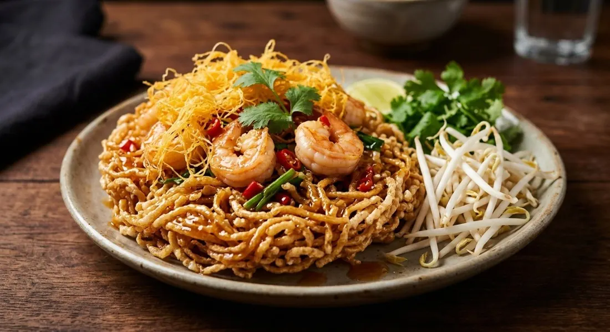

Rice vermicelli deep-fried until it puffs, tossed in a slow-reduced sweet-sour sauce with prawns and golden egg floss — the old palace party dish.

หมี่กรอบ is a dish of texture engineering: dried rice vermicelli thrown into hot oil where it puffs in a second, eggs strained through a sieve into oil to make ฝอยไข่, egg floss, and everything bound by a sauce that must stay thick enough to coat without softening the crunch. Wongnai's recipe is the cleanest map of the sequence — three separate fryers' worth of components, then the wok sauce, then the toss.
The sauce is where the ancient and modern versions part company. Krua.co's food history is blunt: the real หมี่กรอบโบราณ is not "the fluffy pink sweet one popular now." The old sauce carries ส้มซ่า, bitter orange peel — a fresh, aromatic bitterness — plus fried shallots, fried garlic and pickled garlic to cut the richness, and matchstick tofu sun-dried before frying. The modern shop version runs on ketchup and chilli sauce, brighter and sweeter.
The Cookpad ancient recipe shows why the old sauce was a craft item: 600 grams of sugar and tamarind reduced over 45 minutes until "lava-thick", then rested overnight before the noodles ever meet it. Krua.co adds the practical note: the sauce (น้ำเชื้อ) can be made in bulk and keeps a month in the fridge.
| Thai | English | Amount |
|---|---|---|
| กุ้งสด | Prawns, chopped | 200 g |
| สามเกลอ | Coriander root, garlic, pepper — pounded | 1 tbsp |
| เส้นหมี่แห้ง | Dried rice vermicelli | 70 g |
| หอมแดงซอย | Shallots, sliced | 5 |
| กระเทียมดองซอย | Pickled garlic, sliced | 3 cloves |
| น้ำตาลมะพร้าว | Coconut sugar | 4 tbsp |
| ซอสพริก / ซอสมะเขือเทศ | Chilli sauce / ketchup | 1 tbsp / 4 tbsp |
| น้ำมะขามเปียก | Tamarind water | 2 tbsp |
| น้ำส้มสายชู / น้ำกระเทียมดอง | Vinegar / pickled garlic brine | 1 tbsp each |
| น้ำปลา | Fish sauce | 1 tsp |
| ไข่ไก่ | Eggs, for the floss | 3 |
| ใบกุยช่าย / ถั่วงอก | Garlic chives / bean sprouts | to serve |
The ancient version (Krua.co): bitter-orange peel in the sauce, sun-dried matchstick tofu, duck-and-chicken egg floss, fried shallots and garlic. The Cookpad big batch: 600 g sugar reduced 45 minutes to lava, rested overnight.
The sauce's soul. Krua.co's ancient version is built on bitter-orange (ส้มซ่า) peel, fried shallots, fried garlic and pickled garlic; Wongnai and Cookpad build on tamarind, ketchup and chilli sauce. The sources themselves say it: the fluffy pink sweet one is the modern shop version, not the original.
The reduction. Wongnai cooks the sauce "until slightly thick"; Cookpad's ancient version simmers 45 minutes to lava and rests overnight. The long reduction is the old way; the quick one is the modern kitchen's.
What's in the topping. Wongnai: prawns and egg floss. Krua.co: prawns, pork, sun-dried matchstick tofu and both duck and chicken egg floss. Cookpad adds crisp-fried kaffir lime leaves. The ancient party plate is the fullest cast.
The noodles' colour. Krua.co warns the authentic one is not the pink fluffy kind — the puffed noodles should be pale yellow, fried light. The pink versions are dyed and sugar-heavier.
Serve it with. Wongnai and Krua.co both plate it with garlic chives and bean sprouts — the fresh crunch against the sweet crunch. Cookpad treats it as a standalone snack.
This recipe is translated from the following Thai-language sources. Where they disagree, we've said so.
1. Wongnai — "วิธีทำ 'หมี่กรอบทรงเครื่อง' เมนูอาหารไทยร่วมสมัย ถึงเครื่องครบรส!" (the recipe used here) — wongnai.com
2. Krua.co — "'หมี่กรอบโบราณ' ต้องมีกลิ่นรสสดชื่นจากส้มซ่า" (the ancient-version food story: bitter orange, tofu, bulk sauce) — krua.co
3. Cookpad (Belli Bell) — "สูตร หมี่กรอบโบราณ" (the 45-minute lava sauce, rested overnight) — cookpad.com